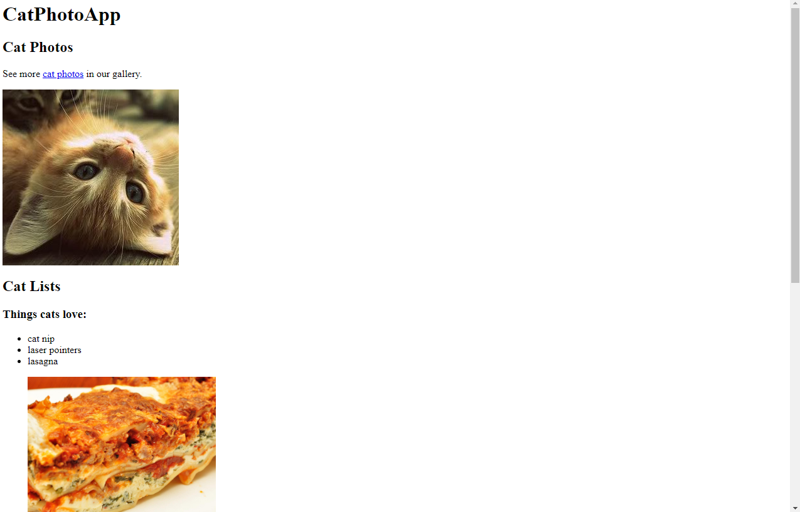

Paulo Henderson Miranda da Silva
Full Stack Developer
Sobre
Olá, sou Paulo Henderson Miranda da Silva, tenho 32 anos e sou Graduado em Bacharelado em Ciencia da Computação. Atualmente estou focado em me tornar um desenvolvedor Front-End, mas também tenho interesse em aprender mais sobre Back-End e Mobile.
Skills
- HTML
- CSS
- JavaScript
- React
- Node.js
- Git
Projetos
-
Learn HTML by Building a Cat Photo App ou (Aprendendo HTML Criando um aplicativ de fotos de Gatos)
As tags HTML fornecem estrutura a uma página da web. Você pode usar tags HTML para adicionar fotos, botões e outros elementos à sua página web. Neste curso, você aprenderá as tags HTML mais comuns criando seu próprio aplicativo de fotos de gatos.
 Learn Basic CSS by Building a Cafe Menu ou (Aprenda CSS básico construindo um menu de café)CSS informa ao navegador como exibir sua página da web. Você pode usar CSS para definir a cor, a fonte, o tamanho e outros aspectos dos elementos HTML. Neste Projeto, Eu aprendi que no CSS criando uma página de menu para a página de um café.
Learn CSS Colors by Building a Set of Colored Markers ou (Aprenda cores CSS construindo um conjunto de marcadores coloridos)
Selecionar as cores corretas para sua página da web pode melhorar muito o apelo estético para seus leitores. Neste Projeto, Eu Aprendi a construirá um conjunto de marcadores coloridos com diferentes maneiras de definir valores de cores e como emparelhar cores entre si.
Learn HTML Forms by Building a Registration Form ou (Aprenda formulários HTML criando um formulário de registro)
Eu usei formulários HTML para coletar informações das pessoas que visitam sua página da web. Neste Projeto, Eu aprendi a usar formulários HTML criando uma página de inscrição e tambem como controlar quais tipos de dados as pessoas podem digitar em seu formulário e algumas novas ferramentas CSS para estilizar sua página.
Survey Form ou (Formulário de pesquisa - Projeto de Certificação)
Este é um dos projetos necessários para obter sua certificação. Para este projeto, você criará um formulário de pesquisa para coletar dados de seus usuários.
Learn the CSS Box Model by Building a Rothko Painting ou (Aprenda o modelo CSS Box construindo uma pintura Rothko)
Cada elemento HTML é sua própria caixa – com seu próprio espaçamento e borda. Isso é chamado de Modelo de Caixa. Neste Projeto, Eu usei CSS e o Box Model para criar suas próprias peças de arte retangulares no estilo Rothko.
Learn CSS Flexbox by Building a Photo Gallery ou (Aprenda CSS Flexbox construindo uma galeria de fotos)
Flexbox ajuda você a projetar sua página da web para que fique bem em qualquer tamanho de tela. Neste Projeto, Eu usei, o Flexbox para criar uma página de galeria de fotos responsiva.
Learn Tupography by Building a Nutrition Label ou (Aprenda tipografia construindo um rótulo nutricional)
Tipografia é a arte de estilizar seu texto para que seja facilmente legível e adequado ao seu propósito. Neste Projeto, Eu usei tipografia para criar uma página da web com rótulos nutricionais. Eu aprendi como estilizar texto, ajustar a altura da linha e posicionar seu texto usando CSS.
Learn Accessibility by Building a Quiz ou (Aprendendo acessibilidade criando um questionario)
Foi Criado uma pagina Web para pessoas com com deficiencia e aprendemos a utilizar as ferramentas de acessibilidade como atalhos de tecla,atributos ARIA e práticas recomendadas de design.